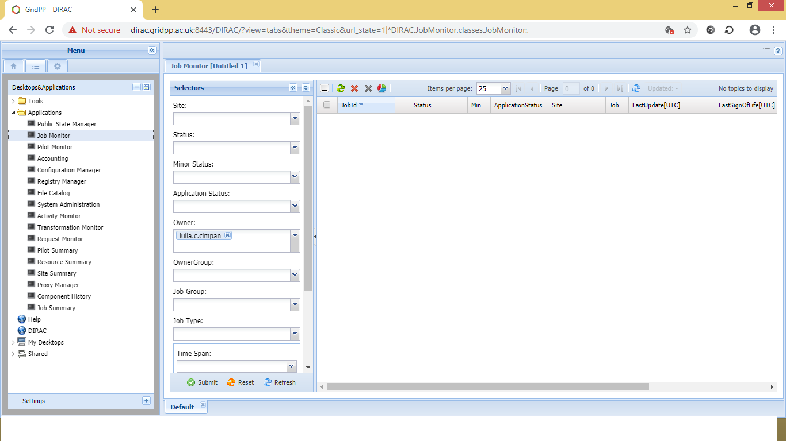

DIRAC install and basic usage¶
Introduction
- get a grid certificate
- join VO (Virtual Organisation)
- add the certificate to your browser
- install DIRAC UI
- submit a job (python –version)
- monitor a job
- put data on the file catalog
- submitting RASCIL job
- get output data RASCIL job
- useful links [1]
Get A Grid Certificate
- a grid certificate is a .p12 file
- Using your browser of choice visit this page and select the Request New User Certificate option. This almost goes without saying, but make sure you supply a valid email address which you can access. You will also be asked to do things like supply a PIN and passwords that you will need later on, so make sure you write everything down!
- You will need to select a Registration Authority (RA) as part of this process.You may also be asked to supply a letter of recommendation explaining why you need to use the grid and with whom you will be working.
- Details at [2]
Join a VO
- Your grid certificate identifies you to the grid as an individual user, but it’s not enough on its own to allow you to use grid resources; you also need to join a Virtual Organisation (VO).
- Note: I have made my request to skatelescope.eu - see [3]
- add the certificate to your browser and use the below link to register [4]
Add the Certificate to your Browser
- Now that you have the certificate and have joined to VO, you can access DIRAC in browser [5]
- More details about DIRAC at Guide to DIRAC [6]
The Certificate in your Browser

DIRAC
Before DIRAC install¶
Overview of directories on your server
/home/<your-user> - home directory
/raid/scratch/<your-user> - a working directory,
here DIRAC will be installed
FC:/............................ - belongs to IRIS, can
store large data. You need DIRAC installation to
be able to copy files to FC:/ (IRIS)
DIRAC install¶
Details at: [9]
<your-user>@<your-server> /raid/scratch/<your-user> > mkdir dirac_ui
<your-user>@<your-server> /raid/scratch/<your-user> > cd dirac_ui/
<your-user>@<your-server> /raid/scratch/<your-user>/dirac_ui >
mkdir $HOME/.globus
<your-user>@<your-server> /raid/scratch/<your-user>/dirac_ui >ls
#make sure you have the cert in this folder dirac_ui, eg certBundle.p12
certBundle.p12
Details at: [8]
<your-user>@<your-server> /raid/scratch/<your-user>/dirac_ui >
openssl pkcs12 -in certBundle.p12 -clcerts -nokeys -out
$HOME/.globus/usercert.pem
Enter Import Password:
MAC verified OK
<your-user>@<your-server> /raid/scratch/<your-user>/dirac_ui >
openssl pkcs12 -in certBundle.p12 -nocerts -out
$HOME/.globus/userkey.pem
Enter Import Password:
MAC verified OK
Enter PEM pass phrase:
Verifying - Enter PEM pass phrase:
<your-user>@<your-server> /raid/scratch/<your-user>/dirac_ui >
chmod 0400 $HOME/.globus/userkey.pem
Details at: [9]
<your-user>@<your-server> /raid/scratch/<your-user>/dirac_ui >
wget -np -O dirac-install
https://raw.githubusercontent.com/DIRACGrid/DIRAC/integration/Core/sc
ripts/dirac-install.py
<your-user>@<your-server> /raid/scratch/<your-user>/dirac_ui >
chmod u+x dirac-install
<your-user>@<your-server> /raid/scratch/<your-user>/dirac_ui >
./dirac-install -r v6r22p6 -i 27 -g v14r1
Details at: [9]
<your-user>@<your-server> /raid/scratch/<your-user>/dirac_ui > source
cshrc
<your-user>@<your-server> /raid/scratch/<your-user>/dirac_ui >
dirac-proxy-init -x
Generating proxy...
Enter Certificate password:
<your-user>@<your-server> /raid/scratch/<your-user>/dirac_ui >
dirac-configure -F -S GridPP -C
dips://dirac01.grid.hep.ph.ic.ac.uk:9135/Configuration/Server -I
<your-user>@<your-server> /raid/scratch/<your-user>/dirac_ui >
dirac-proxy-init
-g skatelescope.eu_user -M
#skatelescope.eu it is the VO I am assigned to
Generating proxy...
Enter Certificate password:
Submit a simple job
Details at: [11]
<your-user>@<your-server> /raid/scratch/<your-user>/dirac_ui > cat
simple.jdl
JobName = "InputAndOuputSandbox";
Executable = "pythonV.sh";
StdOutput = "StdOut";
StdError = "StdErr";
InputSandbox = {"pythonV.sh"};
OutputSandbox = {"StdOut","StdErr"};
<your-user>@<your-server> /raid/scratch/<your-user>/dirac_ui >
cat pythonV.sh
#!/bin/bash
/usr/bin/python --version;
Monitor a simple job
Details at: [11]
<your-user>@<your-server> /raid/scratch/<your-user>/dirac_ui >
dirac-wms-job-submit simple.jdl
JobID = 25104301
<your-user>@<your-server> /raid/scratch/<your-user>/dirac_ui >
dirac-wms-job-status 25104301
JobID=25104301 Status=Done; MinorStatus=Execution Complete;
Site=LCG.UKI-NORTHGRID-MAN-HEP.uk;
- The job execution can be seen also on DIRAC Web-link
<https://dirac.gridpp.ac.uk:8443/DIRAC/>_ (see Applications/Job Monitor -> Owner (your name) -> submit)
Put RASCIL.img in a file catalog¶
Details at: [13]
<your-user>@<your-server> /raid/scratch/<your-user>/dirac_ui >
dirac-dms-add-file LFN:/skatelescope.eu/user/<first letter of your
user>/<your-user>/rascil/RASCIL.img RASCIL.img UKI-NORTHGRID-
MAN-HEP-disk
# UKI-NORTHGRID-MAN-HEP-disk - SE: DIRAC Storage Element
Then you will find the file RASCIL.img under:
FC:/skatelescope.eu/user/<first letter of your
user>/<your-user>/rascil/RASCIL.img
Submitting RASCIL job¶
cat simpleR1.jdl
JobName = "InputAndOuputSandbox";
Executable = "testR1.sh";
StdOutput = "StdOut";
StdError = "StdErr";
InputSandbox = {"testR1.sh"};
InputData = {"LFN:/skatelescope.eu/user/c/cimpan/rascil/
RASCIL-full1.img"};
OutputSandbox = {"StdOut","StdErr","imaging_dirty.fits",
"imaging_psf.fits","imaging_restored.fits"};
OutputSE ="UKI-NORTHGRID-MAN-HEP-disk";
Site = "LCG.UKI-NORTHGRID-MAN-HEP.uk";
cat testR1.sh
#!/bin/bash
singularity exec --cleanenv -H $PWD:/srv --pwd /srv -C
RASCIL-full1.img python3 /rascil/examples/scripts/imaging.py;
Managing RASCIL job¶
Details at: [11]
$ dirac-wms-job-submit simpleR1.jdl
JobID = 25260750
$ dirac-wms-job-status 25260750
JobID=25260750 Status=Running; MinorStatus=Input Data Resolution;
Site=LCG.UKI-NORTHGRID-MAN-HEP.uk;
$ dirac-wms-job-status 25260750
JobID=25260750 Status=Done; MinorStatus=Execution Complete;
Site=LCG.UKI-NORTHGRID-MAN-HEP.uk;
Get Output Data RASCIL job¶
Details at: [11]
Note: the RASCIL job has 3 image outputs, so we specify them in
OutputSandbox and we take the data locally using command
$ dirac-wms-job-get-output 25260750
Job output sandbox retrieved in
/raid/scratch/<your-user>/dirac_ui/tests/rascilTests/25260750/
$ cd 25260750
$ ls
imaging_dirty.fits imaging_psf.fits imaging_restored.fits StdOut
$ cat StdOut #or StdErr
Useful Links
- What is IRIS: link
- Rich details GridPP user-guide at: link
- Getting on the grid: link
- Useful command DIRAC UI install: link
- Getting started: link
- Getting started User Jobs: link
- Getting started Data Management: link
- Getting started Command Line: link
| [1] | What is IRIS: https://www.iris.ac.uk/about-iris/ Rich details GridPP: https://github.com/GridPP/user-guides Getting Started: https://dirac.readthedocs.io/en/latest/UserGuide/GettingStarted/index.html |
| [2] | grid certificate: http://hep.ph.liv.ac.uk/~sjones/user-guides/getting-on-the-grid/grid-certificate.html |
| [3] | Approved Global VOs: https://www.gridpp.ac.uk/wiki/GridPP_approved_VOs |
| [4] | register for a VO: https://voms.gridpp.ac.uk:8443/voms/skatelescope.eu/user/home.action |
| [5] | DIRAC in browser: https://dirac.gridpp.ac.uk:8443/DIRAC/ |
| [6] | Guide to DIRAC: https://www.gridpp.ac.uk/wiki/Quick_Guide_to_Dirac#Server_URL |
| [8] | runMeForCertAndKey: https://github.com/as595/SKA-IRIS/blob/master/DIRACUI/runMeForCertAndKey |
| [9] | (1, 2, 3) Install Dirac: https://github.com/as595/SKA-IRIS/blob/master/DIRACUI/InstallDirac.sh |
| [11] | (1, 2, 3, 4) Simple Job: https://dirac.readthedocs.io/en/latest/UserGuide/GettingStarted/UserJobs/CommandLine/index.html |
| [13] | File Catalog: https://dirac.readthedocs.io/en/latest/UserGuide/CommandReference/DataManagement/index.html |
| Author: | Iulia Cimpan |
|---|---|
| Date: | 7 Sept 2020 |